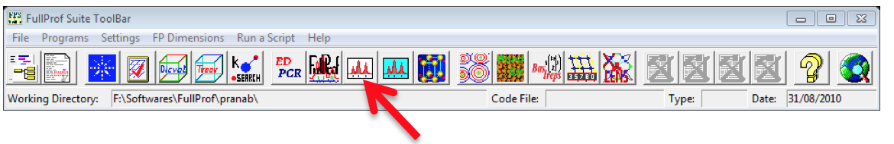
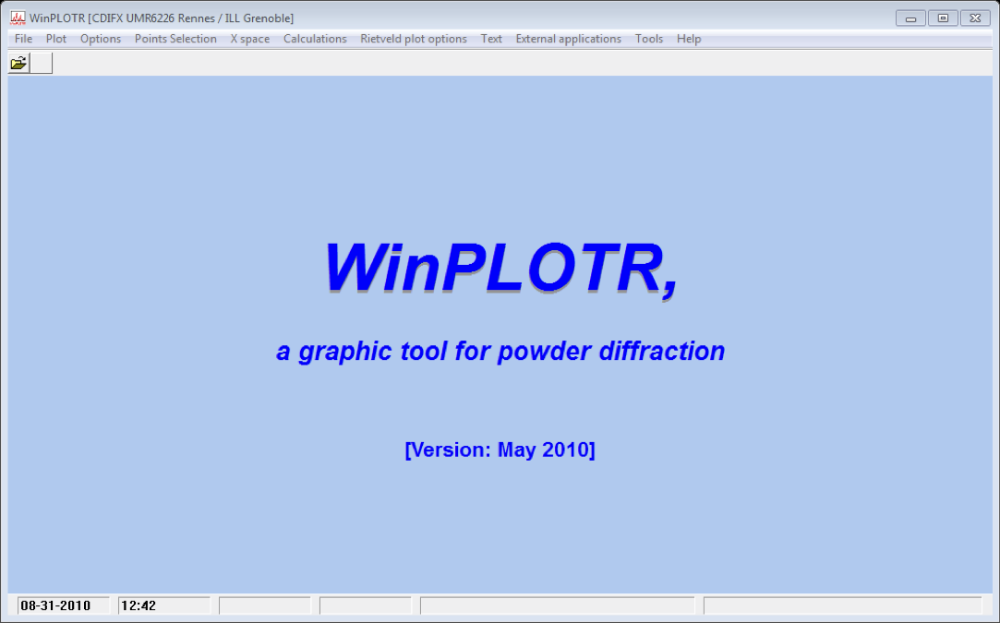
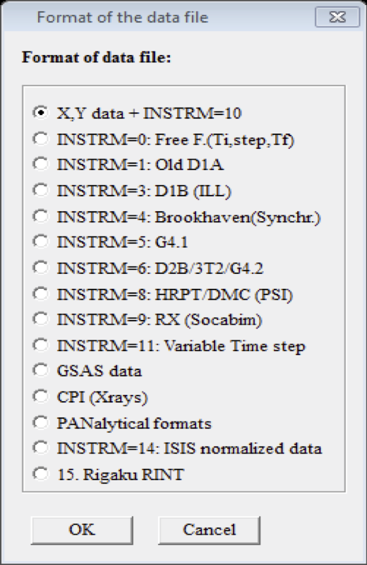
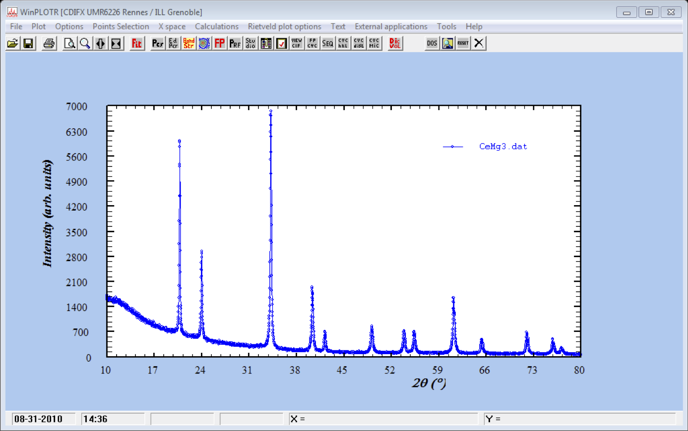
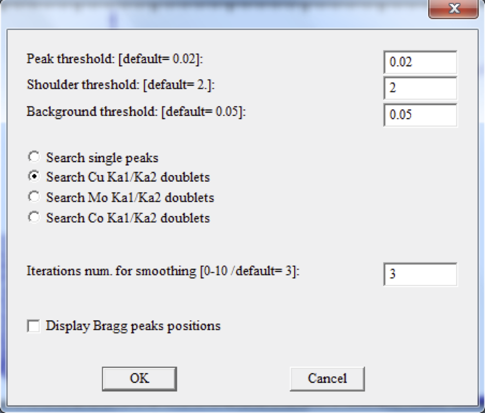
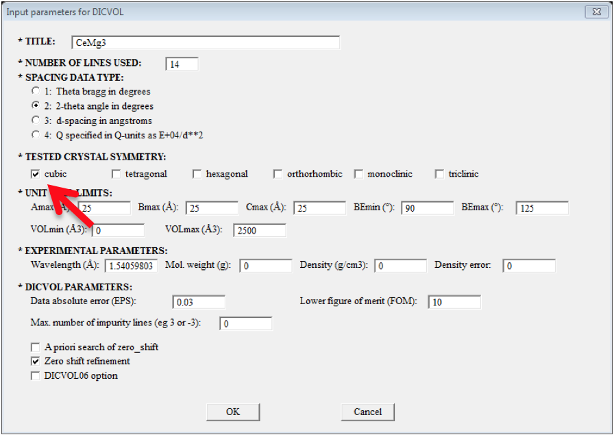
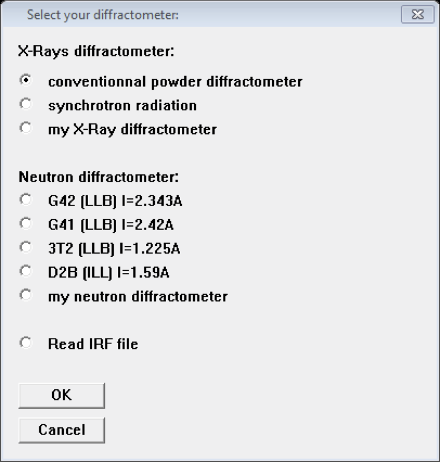

Creating PCR File
-
First of all, it is recommended that you always create a new (separate) directory for the FullProf analysis of each of your samples. Like for example, now I want to do the analysis of CeMg3, so I will create
D:\FullProf\CeMg3 -
Copy the powder XRD data file to the folder created (i.e., to
D:\FullProf\CeMg3). Generally, this XRD data file is an ASCII file with the extension .x_y or .ASC, containing data in two column format, it will be better to change the file extension to .dat. -
Now run the fullProf Program, then the FullProf toolbar will appear.
-
Click the WinPlotr icon to run WinPlotr.

- Then a window like shown bellow will appear:

- Then go to File >> Open Pattern File and select the first option X,Y data + INSTRM=10 and Click OK

-
Now a browser window will pop-up and you have to browse the data file (Here in our case it is CeMg3.dat)
-
A plot window will appear

- Go to Points Selection >> Automatic Peak Search. Then following window will appear, select Search Cu Ka1/Ka2 doublets and leave the remaining parameters as defaults for the first time and Click OK.

-
Now it will show, how many peak it has found, if the peak number is large or small, you can play with various parameters, especially Iterations num. Note: the maximum number of peak must be bellow 20.
-
Once you have got the right no. of peaks (say, 12 or 14), you can go ahead.
-
Now, you have to save this, for this, go to Points Selection >> Save as… >> Save Points for DICVOL06. A pop-up window will appear, put a title, select the Tested Crystal Symmetry (If it's known, like in our case of CeMg3 it's Cubic. And click OK.

-
A pop-up window will appear saying CeMg3.dic file has been created, click ok, Next pop-up will say Edit DICVOL06 input file edit? Click NO. Finally, click RUN in the next pop-up window while asking Run DICVOL06? If you get a solution, click OK.

-
Sometimes, it may happen that you end up with no solution, then go back step 12 and put the maximum number of impurity peak =1 (increase it step by step if you don't get no solution again)
-
After clicking OK, in the step 13, a pop-up window will say Normal end of DICVOL6? Click Kenavo!
-
Now the required PCR file has been created in our directory.